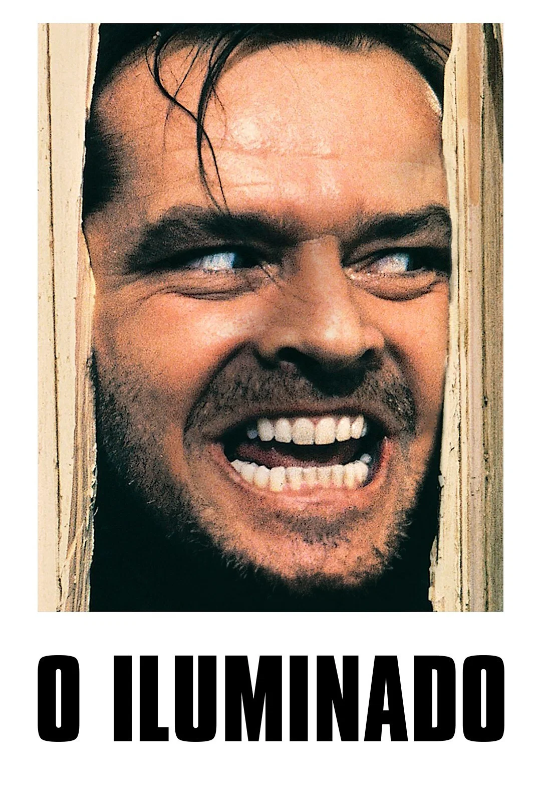

Interestellar

"Interestellar" (2014) é um filme de ficção científica dirigido por Christopher Nolan que acompanha a história de um grupo de exploradores que viajam através de um buraco de minhoca em busca de um novo lar para a humanidade.
O Iluminado (1980)

"O Iluminado" (1980) é um filme de terror psicológico dirigido por Stanley Kubrick que acompanha a história de um escritor que se muda para um hotel isolado e começa a experimentar fenômenos paranormais.
O Magico de Oz

"O Mágico de Oz" um filme de fantasia dirigido por Victor Fleming que acompanha a história da jovem chamada Dorothy, que é levada para um mundo mágico por um tornado e precisa encontrar Oz para voltar para casa.